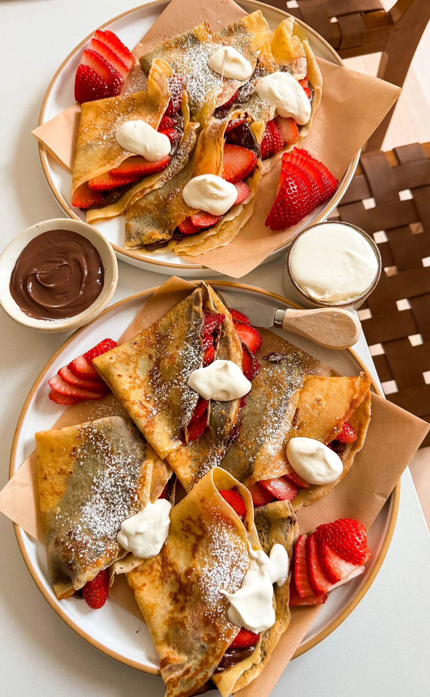

If you love the lemon loaf cake from Starbucks, be prepared to be
blown away by this copycat recipe! It’s packed with bright citrusy
lemon flavor and the cake is incredibly moist and soft just like
the real thing but even better. Drizzled with the most delicious
glaze on top, this cake is surprisingly so easy to make and
perfect for the summer coming up!
DESSERT
LEMON CAKE
If you love the lemon loaf cake from Starbucks, be prepared to
be blown away by this copycat recipe! It’s packed with bright
citrusy lemon flavor and the cake is incredibly moist and soft
just like the real thing but even better. Drizzled with the most
delicious glaze on top, this cake is surprisingly so easy to make
and perfect for the summer coming up!
PREP TIME: 1 HOUR - COOK TIME:1 HOUR
TOTAL TIME: 2 HOURS - YEILDS:10 SLICES
INGREDIENTS
LEMON CAKE
1 3/4 cup all-purpose flour
1 teaspoon baking powder
1/2 teaspoon baking soda
1/2 teaspoon salt
3.2 ounces package lemon instant pudding
1 1/4 cup white granulated sugar
3 large eggs
1/2 cup vegetable oil
1 cup sour cream
1 teaspoon vanilla extract
1/4 cup lemon juice
2 tablespoons lemon zest
LEMON ICEING
2 cups confectioners sugar
3 tablespoons lemon juice
1 tablespoon whole milk
1 teaspoon vanilla extract
INSTRUCTIONS
Preheat oven to 350°F.
To a large mixing bowl, add the all-purpose flour, baking
powder, baking soda, salt, and lemon instant pudding. Whisk
together well
To another bowl, add the sugar, eggs, vegetable oil,
sour cream, vanilla extract, lemon juice, and lemon zest.
Beat together until smooth.
Now add all the dry ingredients to the wet. Combine together
until you have a batter.
Line a loaf pan with parchment paper and transfer the batter.
Bake for 55 minutes to 1 hour until a toothpick comes out
clean in the center.
Bake for 55 minutes to 1 hour until a toothpick comes out
clean in the center.
o a bowl, combine confectioners sugar with lemon juice and
milk to create a glaze.
Once the cake is cooled, add the glaze on top, adding as
little or as much as you'd like.
Let the frosting set for 5 minutes and then slice and eat
DRINKS
HOT COCOA WITH TORCHED MARSHMALLOW TOPPING
PREP TIME: 10 MINUTES -- COOK TIME: 20 MINUTES
TOTAL TIME: 30 MINUTES -- YEILDS 4
There’s nothing like a warm cup of hot cocoa to cozy up to but when
you add a creamy, toasted marshmallow topping, it becomes
next-level indulgent. Think rich, velvety hot cocoa paired with a
golden, fluffy cloud that has just the right amount of sweetness
and a hint of campfire nostalgia. Whether you’re treating yourself
on a chilly day or serving it up for a special occasion, this
recipe is sure to impress every time.
DRINKS
HOT COCOA WITH TORCHED MARSHMALLOW CREME
This hot cocoa is the ultimate cozy treat, topped with a
luscious swirl of marshmallow that’s toasted to golden
perfection. The combination of rich, creamy cocoa and the
slightly crisp, fluffy topping feels like a warm hug in a mug.
It’s indulgent, fun, and perfect for any chilly day!
PREP TIME: 10 MINUTES - COOK TIME: 20 MINUTES
TOTAL TIME: 30 MINUTES - YEILDS:4
INGREDIENTS
HOT COCOA
1 3/4 cup evaporated milk
1 1/2 cup whole or 2% milk
1/4 cup heavy cream
3 tablespoons brown sugar
1 teaspoon vanilla extract
1/4 cup cocoa powder
4 ounces semi-sweet chocolate
pinch of salt
MARSHMALLOW TOPPING
4 egg whites
1 cup white granulated sugar
1 cup corn syrup
1/2 cup water
3/4 teaspoon cream of tartar
1 teaspoon vanilla extract
INSTRUCTIONS
PREPARE THE HOT COCOA
In a medium saucepan, combine evaporated milk, regular milk,
and heavy cream over medium heat.
Stir in brown sugar, cocoa powder, and a pinch of salt until
smooth and warmed through.
Add semi-sweet chocolate and whisk until fully melted.
Stir in vanilla extract, adjust sweetness as desired, and keep
warm on low heat.
MAKE MARSHMALLOW FLUFF
In a mixing bowl, add egg whites and cream of tartar. Whisk
until the mixture becomes bubbly and foamy.
in a saucepan, combine water, sugar, and corn syrup. Heat over
medium heat, stirring until the sugar dissolves
Allow the mixture to simmer without stirring further, until
it reaches about 240°F or 115°C using a candy thermometer.
With the mixer running at medium speed, slowly stream the hot
syrup into the egg whites. Avoid pouring too quickly to prevent
scrambling
Once all the syrup is added, increase the mixer speed to
high and beat until the mixture is glossy and holds stiff peaks.
ASSEMBLE AND TOURCH
Pour the prepared hot cocoa into cups or mugs.
Transfer the marshmallow topping to a piping bag fitted with
a star or round tip.
Pipe the marshmallow around the rim of each cup.
Use a kitchen torch to toast the marshmallow until golden brown.
Serve immediately and enjoy your elevated hot cocoa experience!

BREAKFAST / DESSERT
CREPES
PREP TIME: 10 MINUTES -- COOK TIME: 20 MINUTES
TOTAL TIME: 30 MINUTES -- YEILDS 12 CREPES
These chocolate and strawberry stuffed crepes are a game-changer
and way easier to make than you'd expect! The combination of soft,
buttery crepes with creamy hazelnut chocolate spread and juicy
strawberries is pure bliss. Whip these up for breakfast or dessert,
and you'll see how quickly they become a favorite!
BREAKFAST / DESSERT
CREPES WITH CHOCOLATE AND STRAWBERRIES
These chocolate and strawberry stuffed crepes are a game-changer
and way easier to make than you'd expect! The combination of soft,
buttery crepes with creamy Nutella and juicy strawberries is pure
bliss. Whip these up for breakfast or dessert, and you'll see how
quickly they become a favorite!
PREP TIME: 10 MINUTES - COOK TIME: 20 MINUTES
TOTAL TIME: 30 MINUTES - YEILDS: 12 CREPES
INGREDIENTS
1 1/4 cup all-purpose flour
3 tablespoons granulated white sugar
1/4 teaspoon salt
2 large eggs
3 1/2 tablespoons unsalted butter, melted
1 teaspoon vanilla extract
1 1/4 to 1 1/2 cup whole milk, cold
1/2 cup chocolate hazelnut spread, for spreading on
1 cup sliced strawberries
1/4 cup powdered sugar, optional
whipped cream, optional
INSTRUCTIONS
In a large mixing bowl, whisk together the flour, sugar,
and salt until well combined.
Create a well in the center of the dry ingredients and add the
eggs, melted butter, and vanilla extract.
Gradually whisk in the cold milk, starting with 1 1/4 cups and
adding more if needed, until the batter is smooth and has the
consistency of heavy cream.
Heat a non-stick skillet or crepe pan over medium heat. Lightly
grease the pan with butter or cooking spray.
Pour about 1/4 cup of batter into the center of the pan, then
quickly swirl the pan to spread the batter into a thin,
even layer.
Cook for about 1-2 minutes, or until the edges start to lift
and the bottom is lightly golden. Flip the crepe and cook
for another 1-2 minutes on the other side.
Remove the crepe from the pan and repeat with the remaining
batter, stacking the cooked crepes on a plate.
Spread a generous amount of chocolate hazelnut spread on each
crepe and add sliced strawberries. Fold the crepes into
quarters or roll them up. Optional, stuff them with whipped
cream as well or add a dollop on top.
Serve immediately and enjoy your sweet stuffed crepes!